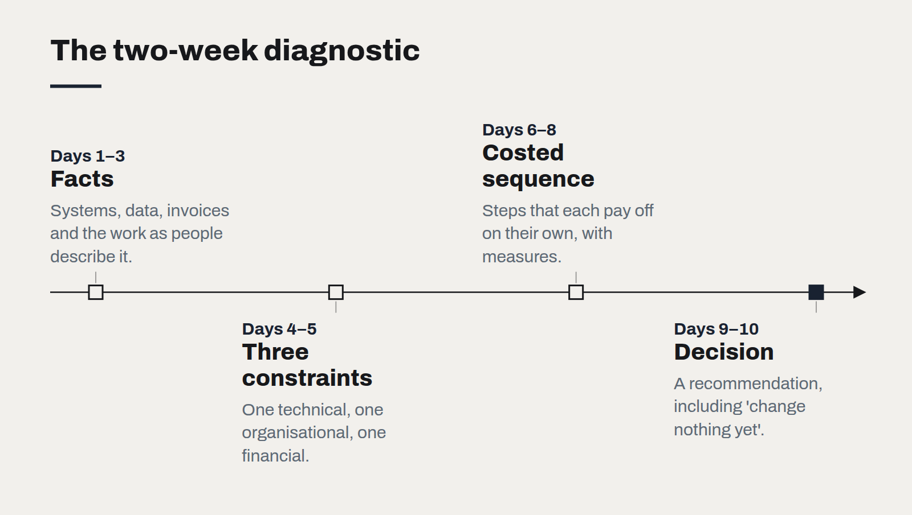

Two weeks to a decision you can defend
Why we start almost every engagement with a fixed-fee fortnight, and what a good diagnostic leaves behind even if you never hire us again.
Most technology projects begin with a decision that was made too early. A system is chosen before the problem is understood; a budget is set before anyone has looked at the data; a vendor is selected on the strength of a demo. By the time the real constraints appear, the organisation is committed, and the project spends its life working around a choice it cannot easily undo.
That is why almost every engagement we take on starts the same way: a two-week diagnostic, at a fixed fee, with a defined output and no obligation to continue. It is the part of our method clients most often tell us they would keep even if they changed everything else.
Week one: find the three constraints
The first week is spent on facts, not opinions. We look at the systems as they actually run, the data as it actually is, the costs as they actually appear on invoices, and the work as the people doing it describe it.
The goal is not a comprehensive audit. It is to find the handful of constraints that actually block progress. In our experience there are usually three. One is technical — a system that cannot do something, or data that cannot be trusted. One is organisational — a decision nobody owns, or a team without capacity. And one is financial — a cost that makes an obvious option unaffordable, or a hidden cost that makes the current state more expensive than anyone realised.
Naming those three is often the most valuable moment of the engagement. Arguments that have gone around for months tend to settle once the constraint is written down with evidence beside it.

Week two: a costed sequence
The second week turns constraints into a plan. Not a vision document, but a sequence: what to do first, what it costs, how you will know it worked, and where the natural stopping points are.
Each step is sized so that it delivers something useful on its own. If the business stops after step one, it should still be better off. Each carries a measure, taken from the baseline gathered in week one, so progress can be checked rather than asserted.
What you leave with
- A written statement of the problem and the three constraints, with evidence.
- A baseline of the measures that matter, as they stand today.
- A sequenced, costed roadmap with decision points.
- A recommendation — including, sometimes, that the right move is to change nothing yet.
That last one matters. A diagnostic that always concludes a large project is needed is a sales process, not a diagnosis. We would rather tell a client that their existing system is fine and the problem is a process, and have them trust the next recommendation we make.
Why fixed and short
Two weeks is long enough to find the real constraints and short enough that the decision to start is small. A fixed fee means nobody is incentivised to find more work. And no obligation to continue means the plan has to stand on its own — usable by the client's own team, or by another supplier, as readily as by us.
The case against replacing your ERP
Most integration pain is process pain wearing a technical costume. How to tell the difference before committing to a migration.
What a technology roadmap owes the board
Three questions a roadmap has to answer before it is worth presenting — what stops, what starts, and what it costs to be wrong.
What changes when software is cheap to write
AI coding tools have made producing code dramatically faster. They have not made deciding what to build, checking that it works or running it for years any cheaper — and that shifts where the value is.